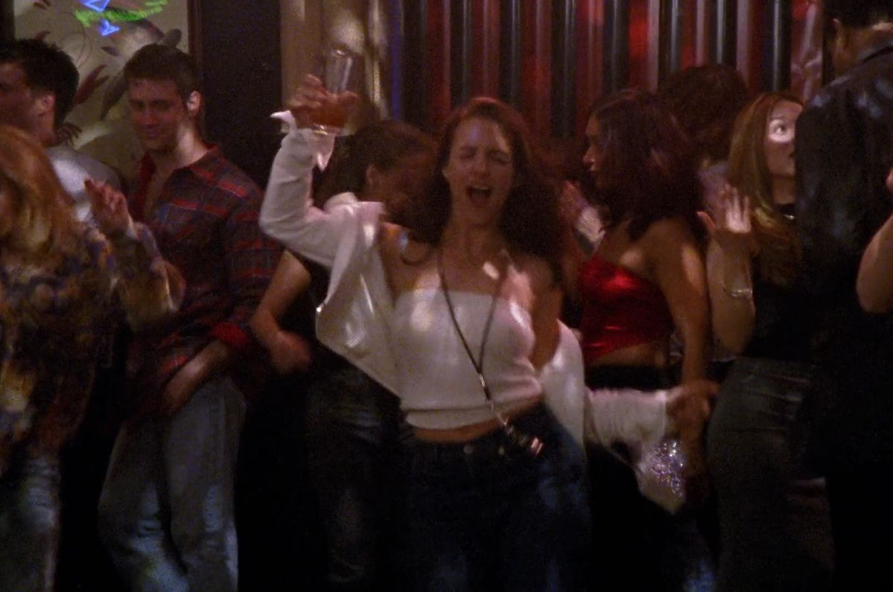

charlotte york
Toca el nombre
Charlotte es galerista de arte y la más romántica de las cuatro. Llegó a Nueva York creyendo en el matrimonio y en el príncipe azul, con ideas muy claras de cómo debería ser su vida.
Su primer matrimonio termina, y con Harry, su segunda pareja, aprende que el amor no siempre llega como lo imaginó. Vive en el elegante Upper East Side.
